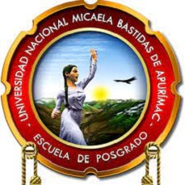
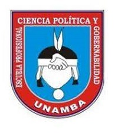

La UNAMBA ha establecido diversas líneas de investigación que reflejan su compromiso con la excelencia académica y el desarrollo sostenible. Estas líneas, aprobadas por nuestro Consejo Universitario, se caracterizan por su enfoque tanto disciplinario como interdisciplinario.
A través de estas iniciativas, buscamos fomentar un ambiente propicio para la investigación, orientando las estrategias de promoción y colaboración entre diferentes áreas del conocimiento.

Modelos de gestión y calidad educativa.

Sistema político y gobernabilidad.
Teoría política y gobernabilidad.